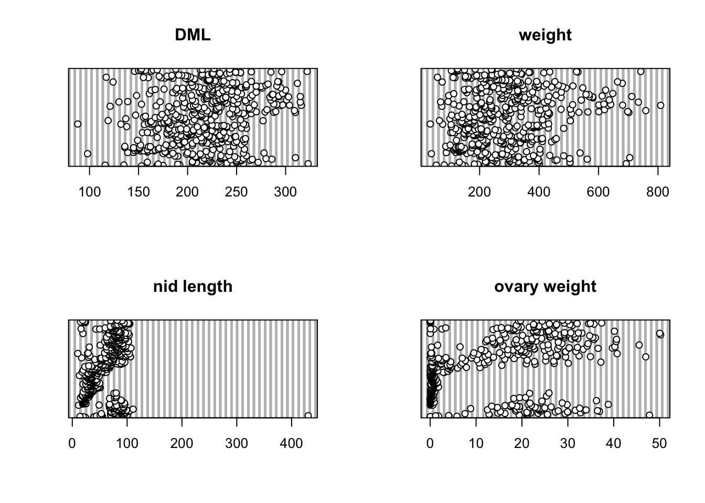
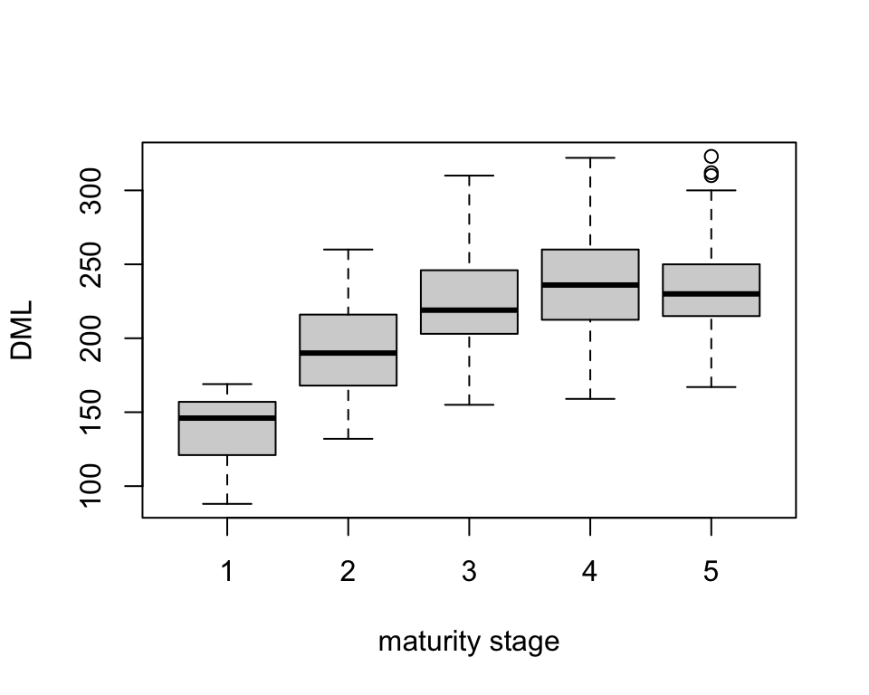

Squid Analysis
Alex Douglas
27/02/2020
Sampling and data description
These data were originally collected as part of a study published in Aquatic Living Resources (Smith et al., 2005). The aim of the study was to investigate the seasonal patterns of investment in somatic and reproductive tissues in the long finned squid Loligo forbesi caught in Scottish waters. Squid were caught monthly from December 1989 - July 1991 (month and year variables). After capture, each squid was given a unique specimen code (specimen variable) and the following variables measured:
- weight variable - body weight (g)
- sex variable - sex (only female squid are included here)
- DML variable - individual dorsal mantle length (mm)
- eviscerate.weight variable - mantle weight measured without internal organs (g)
- ovary.weight variable - gonad weight (g)
- nid.weight variable - nidamental gland weight (g)
- nid.length variable - nidamental gland length (g)
- dig.weight variable - digestive gland weight (g)
Each individual was also assigned a categorical measure of maturity (maturity.stage variable) ranging from 1 to 5 with 1 = immature, 5 = mature.
Some interesting background information on squid morphology can be found here and the following image provides a useful summary of squid anatomy.

Data import and exploration
## 'data.frame': 519 obs. of 13 variables:
## $ sample.no : int 105128901 105128901 105128901 105128901 105128901 ...
## $ specimen : int 1002 1003 1005 1007 1008 ...
## $ year : int 1989 1989 1989 1989 1989 ...
## $ month : int 12 12 12 12 12 ...
## $ weight : num 152 106 ...
## $ sex : int 2 2 2 2 2 ...
## $ maturity.stage : int 3 1 2 2 3 ...
## $ DML : int 174 153 169 175 169 ...
## $ eviscerate.weight: num 87.5 62.6 79.4 83.1 72.2 ...
## $ dig.weight : num 4.65 3.14 ...
## $ nid.length : num 39.4 24.1 39 41.4 39.8 ...
## $ nid.weight : num 2.46 0.319 ...
## $ ovary.weight : num 1.68 0.103 0.289 0.252 0.86 ...In this dataset 519 squid were caught and 13 variables were measured for each squid. Details are shown above.
The variables maturity.stage, month and
year were converted from integers to factors in the
dataframe squid. These recoded variables were named
Fmaturity, Fmonth and Fyear.
Next, let’s take a look at the number of observations across years and months.
| 1989 | 1990 | 1991 | |
|---|---|---|---|
| 1 | 0 | 3 | 37 |
| 2 | 0 | 0 | 30 |
| 3 | 0 | 40 | 29 |
| 4 | 0 | 10 | 33 |
| 5 | 0 | 1 | 30 |
| 6 | 0 | 0 | 14 |
| 7 | 0 | 42 | 1 |
| 8 | 0 | 29 | 0 |
| 9 | 0 | 82 | 0 |
| 10 | 0 | 19 | 0 |
| 11 | 0 | 76 | 0 |
| 12 | 12 | 31 | 0 |
In 1989 data were only collected during December and in 1991 data collection stopped in August. During 1990, no data were collected in either February or June. There are also some months that have very few observations (May 1990 and July 1991 for example) so care must be taken when modelling these data.
Number of observations in each month for each of the squid maturity stages are given in the table below.
| 1 | 2 | 3 | 4 | 5 | 6 | 7 | 8 | 9 | 10 | 11 | 12 | |
|---|---|---|---|---|---|---|---|---|---|---|---|---|
| 1 | 0 | 0 | 0 | 2 | 0 | 4 | 8 | 0 | 1 | 1 | 1 | 4 |
| 2 | 1 | 1 | 0 | 1 | 0 | 6 | 22 | 21 | 76 | 17 | 31 | 7 |
| 3 | 2 | 0 | 0 | 1 | 1 | 0 | 0 | 5 | 5 | 1 | 31 | 11 |
| 4 | 18 | 8 | 21 | 20 | 6 | 1 | 5 | 3 | 0 | 0 | 10 | 15 |
| 5 | 19 | 21 | 48 | 19 | 24 | 3 | 8 | 0 | 0 | 0 | 3 | 6 |
Not all maturity stages were observed in all months. Very few squid of maturity stage 1, 2 or 3 were caught in the months January to May whereas maturity stages 4 and 5 were predominantly caught during these months.
Now let’s check for any unusual observations in the variables;
DML, weight, nid.length and
ovary.weight.
par(mfrow = c(2, 2))
dotchart(squid$DML, main = "DML")
dotchart(squid$weight, main = "weight")
dotchart(squid$nid.length, main = "nid length")
dotchart(squid$ovary.weight, main = "ovary weight")
It looks like the variable nid.length contains an
unusually large value. Actually, this value is
biologically implausible and clearly an error. I went back and checked
my field notebook and sure enough it’s a typo. I was knackered at the
time and accidentally inserted a zero by mistake when transcribing these
data. Doh! This squid was identified as 11 with a
sample number 105128901. This observation was subsequently removed from
the data set.
Let’s take a look at whether DML changes with maturity stage.

DML was lowest for maturity stage 1 with a mean length of 139.14 mm. DML increased until maturity stage 3 (mean 222.35 mm) after which it remained reasonably consistent for maturity stages 4 (mean 238.6 mm) and 5 (mean 233.99 mm).
Session Information
R version 4.2.1 (2022-06-23)
Platform: x86_64-apple-darwin17.0 (64-bit)
locale: en_US.UTF-8||en_US.UTF-8||en_US.UTF-8||C||en_US.UTF-8||en_US.UTF-8
attached base packages: stats, graphics, grDevices, utils, datasets, methods and base
other attached packages: pander(v.0.6.5), kableExtra(v.1.3.4), ggplot2(v.3.4.1), htmltools(v.0.5.4), dplyr(v.1.1.0), stringr(v.1.5.0) and knitr(v.1.42)
loaded via a namespace (and not attached): Rcpp(v.1.0.10), pillar(v.1.9.0), bslib(v.0.4.2), compiler(v.4.2.1), formatR(v.1.14), jquerylib(v.0.1.4), highr(v.0.10), tools(v.4.2.1), digest(v.0.6.31), viridisLite(v.0.4.1), jsonlite(v.1.8.4), evaluate(v.0.20), lifecycle(v.1.0.3), tibble(v.3.2.1), gtable(v.0.3.1), pkgconfig(v.2.0.3), rlang(v.1.1.1), cli(v.3.6.1), rstudioapi(v.0.14), yaml(v.2.3.7), xfun(v.0.37), fastmap(v.1.1.0), xml2(v.1.3.3), httr(v.1.4.6), withr(v.2.5.0), systemfonts(v.1.0.4), generics(v.0.1.3), vctrs(v.0.6.3), sass(v.0.4.5), webshot(v.0.5.4), grid(v.4.2.1), tidyselect(v.1.2.0), svglite(v.2.1.1), glue(v.1.6.2), R6(v.2.5.1), fansi(v.1.0.4), rmarkdown(v.2.20), farver(v.2.1.1), magrittr(v.2.0.3), scales(v.1.2.1), rvest(v.1.0.3), colorspace(v.2.1-0), labeling(v.0.4.2), utf8(v.1.2.3), tinytex(v.0.44), stringi(v.1.7.12), munsell(v.0.5.0) and cachem(v.1.0.6)